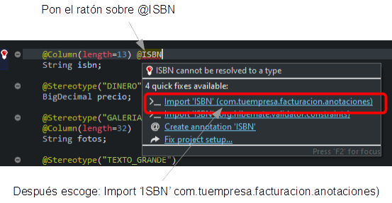

Curso:
1.
Primeros pasos |
2.
Modelo básico del dominio (1) |
3.
Modelo básico del dominio (2) |
4.
Refinar la interfaz de usuario |
5.
Desarrollo ágil |
6.
Herencia |
7.
Lógica de negocio básica |
8. Validación avanzada
|
9.
Refinar el comportamiento predefinido |
10.
Comportamiento y lógica de negocio |
11.
Referencias y colecciones |
A.
Arquitectura y filosofía |
B.
Java Persistence API |
C.
Anotaciones |
D.
Pruebas automáticas
De momento solo hemos hecho validaciones básicas usando la anotación
@Required
de OpenXava. Sin embargo, muchas veces es necesario escribir nuestra
propia lógica de validación, algo que vamos a aprender en esta lección.
Alternativas de
validación
Vamos a refinar tu código para que el usuario no pueda asignar pedidos a
una factura si los pedidos no han sido entregados todavía. Es decir, solo
los pedidos entregados pueden asociarse a una factura. Aprovecharemos la
oportunidad para explorar diferentes formas de hacer esta validación.
Añadir
la propiedad entregado a Pedido
Para hacer esto, lo primero es añadir una nueva propiedad a la entidad
Pedido.
La propiedad
entregado:
@Column(columnDefinition="BOOLEAN DEFAULT FALSE")
boolean entregado;
Además es necesario añadir la propiedad
entregado a la
vista. Modifica la vista
Pedido como muestra el siguiente
código:
@View(extendsView="super.DEFAULT",
members=
"diasEntregaEstimados, entregado, " + // Añade entregado
"factura { factura }"
)
...
public class Pedido extends DocumentoComercial {
Ahora tienes una nueva propiedad
entregado que el
usuario puede marcar para indicar que el pedido ha sido entregado. Ejecuta
el nuevo código y marca algunos de los pedidos existentes como entregados.
Validar
con @EntityValidator
En tu aplicación actual el usuario puede añadir cualquier pedido que le
plazca a una factura usando el módulo
Factura y puede asignar
una factura a cualquier pedido desde el módulo
Pedido. Vamos a
restringir esto. Solo los pedidos entregados podrán añadirse a una
factura.
La primera alternativa que usaremos para implementar esta validación es
mediante
@EntityValidator. Esta anotación te permite asignar a tu
entidad una clase con la lógica de validación deseada. Anotemos tu entidad
Pedido tal como muestra el siguiente código:
@EntityValidator(
value=com.tuempresa.facturacion.validadores.ValidadorEntregadoParaEstarEnFactura.class, // Clase con la lógica de validación
properties= {
@PropertyValue(name="anyo"), // El contenido de estas propiedades
@PropertyValue(name="numero"), // se mueve desde la entidad 'Pedido'
@PropertyValue(name="factura"), // al validador antes de
@PropertyValue(name="entregado") // ejecutar la validación
})
public class Pedido extends DocumentoComercial {
Cada vez que un objeto
Pedido se crea o modifica
un objeto del tipo
ValidadorEntregadoParaEstarEnFactura es
creado, entonces las propiedades
anyo,
numero,
factura
y
entregado se rellenan con las propiedades del mismo nombre del
objeto
Pedido. Después de eso, el método
validate() del
validador se ejecuta. Escribamos el código del validador, primero crea el
paquete
com.tuempresa.facturacion.validadores y después pon en él
esta clase:
package com.tuempresa.facturacion.validadores; // En el paquete 'validadores'
import com.tuempresa.facturacion.modelo.*;
import org.openxava.util.*;
import org.openxava.validators.*;
import lombok.*;
@Getter @Setter
public class ValidadorEntregadoParaEstarEnFactura
implements IValidator { // ha de implementar 'IValidator'
private int anyo; // Propiedades a ser inyectadas desde Pedido
private int numero;
private boolean entregado;
private Factura factura;
public void validate(Messages errors)
throws Exception { // La lógica de validación
if (factura == null) return;
if (!entregado) {
errors.add( // Al añadir mensajes a 'errors' la validación fallará
"pedido_debe_estar_entregado", // Un id del archivo i18n
anyo, numero); // Argumentos para el mensaje
}
}
}
La lógica de validación es extremadamente fácil, si una factura
está presente y este pedido no ha sido servido añadimos un mensaje de
error, por tanto la validación fallará. Has de añadir el mensaje de error
en el archivo
Facturacion/i18n/MensajesFacturacion_es.properties.
Tal como muestra a continuación:
# Mensajes para la aplicación Facturacion
pedido_debe_estar_entregado=Pedido {0}/{1} debe estar entregado para ser añadido a una Factura
Ahora puedes intentar añadir pedidos a una factura con la
aplicación, verás como los pedidos no entregados son rechazados. Ve al
módulo
Facturas, selecciona la pestaña PEDIDOS de una factura y
desde ahí pulsa en el botón
Añadir:
Se mostrará un diálogo con una
lista de pedidos para escoger. Selecciona dos, uno de ellos no entregado
todavía y pulsa en AÑADIR:

Entonces el pedido entregado se
añadirá mientras que el otro es rechazado, generando los siguientes
mensajes:

Ya tienes tu validación hecha
con @EntityValidator. No es difícil, pero es un poco verboso,
porque necesitas escribir una clase nueva solo para añadir 2 línea de
lógica. Aprendamos otras formas de hacer esta misma validación.
Validar
con métodos de retrollamada JPA
Vamos a probar otra forma más sencilla de hacer esta validación,
simplemente moviendo la lógica de validación desde la clase validador a la
misma entidad
Pedido, en este caso a un método
@PrePersist
y
@PreUpdate.
Lo primero es eliminar la clase
ValidadorEntregadoParaEstarEnFactura
de tu proyecto. También quita la anotación
@EntityValidator de tu
entidad
Pedido:
// @EntityValidator( // Eliminar '@EntityValidator'
// value=com.tuempresa.facturacion.validadores.ValidadorEntregadoParaEstarEnFactura.class,
// properties= {
// @PropertyValue(name="anyo"),
// @PropertyValue(name="numero"),
// @PropertyValue(name="factura"),
// @PropertyValue(name="entregado")
// })
public class Pedido extends DocumentoComercial {
Acabamos de eliminar la validación. Ahora, vamos a añadirla de
nuevo, pero ahora dentro de la misma clase
Pedido. Escribe el
método
validar() que se muestra a continuación dentro de tu
clase
Pedido:
@PrePersist @PreUpdate // Antes de crear o modificar
private void validar() throws Exception {
if (factura != null && !isEntregado()) { // La lógica de validación
// La excepción de validación del entorno Bean Validation
throw new javax.validation.ValidationException(
XavaResources.getString( // Para leer un mensaje i18n
"pedido_debe_estar_entregado",
getAnyo(),
getNumero())
);
}
}
Antes de grabar un pedido esta validación se ejecutará, si falla
una
ValidationException será lanzada. Esta excepción es del marco
de validación Bean Validation, de esta forma OpenXava sabe que es una
excepción de validación. Así con solo un método dentro de tu entidad
tienes la validación hecha.
Sólo está permitido un método @PrePersist
y un método @PreUpdate por entidad, por eso antes de ejecutar el
código de arriba has de comentar las anotaciones @PrePersist y @PreUpdate
que tenías en recalcularDiasEntrega(), de esta manera:
// @PrePersist @PreUpdate // Comenta estas anotaciones
private void recalcularDiasEntrega()() {
setDiasEntrega(getDiasEntregaEstimados());
}
No te preocupes, descomentaremos
estas anotaciones más adelante. Aunque JPA sólo permita un método @PrePersist/@PreUpdate
siempre tenemos la opción de crear un único método de retrollamada desde
el cual llamar a todos los demás métodos que necesitemos, pero esto no
hace falta en nuestro caso, porque no vamos a quedarnos con este estilo
de validación como definitivo.
Ahora, intentar añadir pedidos
no entregados a una factura y verás los errores de validación, como en
nuestro primer ejemplo.
Validar
en el setter
Otra alternativa para hacer tu validación es poner tu lógica de validación
dentro del método setter. Es un enfoque simple y llano.
Para probarlo, primero vuelve a
poner las anotaciones @PrePersist y @PreUpdate en el
método recalcularDiasEntrega(), también quita el método validar()
de tu entidad Pedido:
@PrePersist @PreUpdate // Añádelas de nuevo
private void recalcularDiasEntrega() {
setDiasEntrega(getDiasEntregaEstimados());
}
// Quita el método validar()
// @PrePersist @PreUpdate // Antes de crear o modificar
// private void validar() throws Exception {
// if (factura != null && !isEntregado()) { // La lógica de validación
// // La excepción de validación del entorno Bean Validation
// throw new javax.validation.ValidationException(
// XavaResources.getString( // Para leer un mensaje i18n
// "pedido_debe_estar_entregado",
// getAnyo(),
// getNumero())
// );
// }
// }
Después añade el método setter
setFactura()
a
Pedido:
public void setFactura(Factura factura) {
if (factura != null && !isEntregado()) { // La lógica de validación
// La excepción de validación del entorno Bean Validation
throw new javax.validation.ValidationException(
XavaResources.getString( // Para leer un mensaje i18n
"pedido_debe_estar_entregado",
getAnyo(),
getNumero())
);
}
this.factura = factura; // La asignación típica del setter
}
Esto funciona exactamente como las dos opciones anteriores. Es
parecida a la alternativa del
@PrePersist/@PreUpdate, solo que no
depende de JPA, es una implementación básica de Java.
Validar
con Bean Validation
Como opción final vamos a hacer la más breve. Consiste en poner tu lógica
de validación dentro de un método booleano anotado con la anotación de
Bean Validation
@AssertTrue.
Para implementar esta alternativa primero quita el método
setFactura():
// Quita el método setter
// public void setFactura(Factura factura) {
// if (factura != null && !isEntregado()) { // La lógica de validación
// // La excepción de validación del entorno Bean Validation
// throw new javax.validation.ValidationException(
// XavaResources.getString( // Para leer un mensaje i18n
// "pedido_debe_estar_entregado",
// getAnyo(),
// getNumero())
// );
// }
// this.factura = factura; // La asignación típica del setter
// }
Después, añade
isEntregadoParaEstarEnFactura()
a tu entidad
Pedido, como se muestra a continuación:
@AssertTrue( // Antes de grabar confirma que el método devuelve true, si no lanza una excepción
message="pedido_debe_estar_entregado" // Mensaje de error en caso retorne false
)
private boolean isEntregadoParaEstarEnFactura() { // ...
return factura == null || isEntregado(); // La lógica de validación
}
En las formas anteriores de
validación nuestro mensaje de error era construído mediante dos
argumentos,
anyo y
numero, que en nuestro archivo
i18n
son representados por
{0}/{1} respectivamente. Para el caso de
validación con
@AssertTrue no podemos pasar estos dos argumentos
para construir nuestro mensaje de error, sino que podemos declarar
propiedades y propiedades calificadas del bean validado en la definición
del mensaje, para eso cambia en
MensajesFacturacion_es.properties
la entrada:
pedido_debe_estar_entregado=Pedido {0}/{1} debe estar entregado para ser añadido a una Factura
Por:
pedido_debe_estar_entregado=Pedido {anyo}/{numero} debe estar entregado para ser añadido a una Factura
Fíjate que hemos cambiado
{0}/{1}
por
{anyo}/{numero}. OpenXava llenará
{anyo}/{numero}
con los valores de
anyo y
numero que tenga el
Pedido
que está siendo actualizado y no cumple la condición de validación.
Esta es la forma más simple de validar, porque solo anotamos el método con
la validación, y es el entorno Bean Validation el responsable de llamar
este método al grabar y lanzar la excepción correspondiente si la
validación no pasa.
Validar
al borrar con @RemoveValidator
Las validaciones que hemos visto hasta ahora se hacen cuando la entidad se
modifica, pero a veces es útil hacer la validación justo al borrar la
entidad y usar la validación para vetar el borrado de la misma.
Vamos a modificar la aplicación para impedir que un usuario borre un
pedido si éste tiene una factura asociada. Para hacer esto anota tu
entidad
Pedido con
@RemoveValidator, como se muestra a
continuación:
@RemoveValidator(com.tuempresa.facturacion.validadores.ValidadorBorrarPedido.class) // La clase con la validación
public class Pedido extends DocumentoComercial {
Ahora, antes de borrar un pedido la lógica de
ValidadorBorrarPedido
se ejecuta y si la validación falla el pedido no se borra. Veamos el
código de este validador:
package com.tuempresa.facturacion.validadores; // En el paquete 'validadores'
import com.tuempresa.facturacion.modelo.*;
import org.openxava.util.*;
import org.openxava.validators.*;
public class ValidadorBorrarPedido
implements IRemoveValidator { // Ha de implementar 'IRemoveValidator'
private Pedido pedido;
public void setEntity(Object entity) // La entidad a borrar se inyectará...
throws Exception // ...con este método antes de la validación
{
this.pedido = (Pedido) entity;
}
public void validate(Messages errors) // La lógica de validación
throws Exception
{
if (pedido.getFactura() != null) {
// Añadiendo mensajes a 'errors' la validación fallará y el
// borrado se abortará
errors.add("no_puede_borrar_pedido_con_factura");
}
}
}
La lógica de validación está en el método
validate().
Antes de llamarlo la entidad a validar es inyectada usando
setEntity().
Si se añaden mensajes al objeto
errors la validación fallará y la
entidad no se borrará. Has de añadir el mensaje de error en el archivo
Facturacion/i18n/MensajesFacturacion_es.properties:
no_puede_borrar_pedido_con_factura=Pedido asociado a factura no puede ser eliminado
Ahora si intentas borrar un pedido con una factura asociada
obtendrás un mensaje de error y el borrado no se producirá.
Puedes ver que usar un
@RemoveValidator no es difícil, pero es un
poco verboso. Has de escribir una clase nueva solo para añadir un simple
if. Examinemos una alternativa más breve.
Validar
al borrar con un método de retrollamada
Vamos a probar otra forma más simple de hacer esta validación al borrar,
moviendo la lógica de validación desde la clase validador a la misma
entidad
Pedido, en este caso en un método
@PreRemove.
El primer paso es eliminar la clase
ValidadorBorrarPedido de tu
proyecto. Además quita la anotación
@RemoveValidator de tu entidad
Pedido:
// @RemoveValidator(com.tuempresa.facturacion.validadores.ValidadorBorrarPedido.class) // Quitamos '@RemoveValidator'
public class Pedido extends DocumentoComercial {
Hemos quitado la validación. Añadámosla otra vez, pero ahora
dentro de la misma clase
Pedido. Añade el método
validarPreBorrar()
a la clase
Pedido, como se muestra a continuación:
@PreRemove
private void validarPreBorrar() {
if (factura != null) { // La lógica de validación
throw new javax.validation.ValidationException( // Lanza una excepción runtime
XavaResources.getString( // Para obtener un mensaje de texto
"no_puede_borrar_pedido_con_factura"));
}
}
Antes de borrar un pedido esta validación se efectuará, si falla
se lanzará una
ValidationException. Puedes lanzar cualquier
excepción runtime para abortar el borrado. Tan solo con un método dentro
de la entidad tienes la validación hecha.
¿Cuál
es la mejor forma de validar?
Has aprendido varias formas de hacer la validación sobre tus clases del
modelo. ¿Cuál de ellas es la mejor? Todas ellas son opciones válidas.
Depende de tus circunstancias y preferencias personales. Si tienes una
validación que no es trivial y es reutilizable en varios puntos de tu
aplicación, entonces usar un
@EntityValidator y
@RemoveValidator
es una buena opción. Por otra parte, si quieres usar tu modelo fuera de
OpenXava y sin JPA, entonces el uso de la validación en los
setters
es mejor.
En nuestro caso particular hemos optado por
@AssertTrue para la
validación “el pedido ha de estar servido para estar en una factura” y por
@PreRemove para la validación al borrar. Ya que son las
alternativas más simples que funcionan.
Crear
tu propia anotación de Bean Validation
Las técnicas mencionadas hasta ahora son muy útiles para la mayoría de las
validaciones de tus aplicaciones. Sin embargo, a veces te encuentras con
algunas validaciones que son muy genéricas y quieres usarlas una y otra
vez. En este caso definir tu propia anotación de
Bean Validation
puede ser una buena opción. Definir un
Bean validation es más
largo y engorroso que lo que hemos visto hasta ahora, pero usarlo y
reusarlo es simple, tan solo añadir una anotación a tu propiedad o clase.
Vamos a aprender como crear un
Bean Validation.
Usar
un Bean Validation en tu entidad
Es superfácil. Simplemente anota tu propiedad como ves a continuación:
@ISBN // Esta anotación indica que esta propiedad tiene que validarse como un ISBN
String isbn;
Solo con añadir
@ISBN a tu propiedad ésta será validada
justo antes de que la entidad se grabe en la base de datos, ¡genial! El
problema es que
@ISBN no está incluida como un validador
predefinido en el marco de validación
Bean Validation. Esto no
es un gran problema, si quieres una anotación
@ISBN, hazla tú
mismo. De hecho, vamos a crear la anotación de validación
@ISBN
en esta sección.
Antes de nada, añadamos una nueva propiedad
isbn a
Producto.
Edita tu clase
Producto y añádele el siguiente código:
@Column(length=13)
String isbn;
Ejecuta el módulo
Producto con tu navegador. Sí, la
propiedad
isbn ya está ahí. Ahora, puedes añadir la validación.
Definir
tu propia anotación ISBN
Creemos la anotación
@ISBN. Primero, crea un paquete en tu
proyecto llamado
com.tuempresa.facturacion.anotaciones. Pulsa en
él con el botón derecho del ratón y escoge
New > Annotation,
como sigue:

Se mostrará un diálogo, teclea ISBN y pulsa en
Finish:

Edita el código de tu recién
creada anotación
ISBN y déjala así:
package com.tuempresa.facturacion.anotaciones; // En el paquete 'anotaciones'
import java.lang.annotation.*;
import javax.validation.*;
@Constraint(validatedBy = com.tuempresa.facturacion.validadores.ValidadorISBN.class)
@Target({ElementType.FIELD, ElementType.METHOD})
@Retention(RetentionPolicy.RUNTIME)
public @interface ISBN {
Class<?>[] groups() default{};
Class<? extends Payload>[] payload() default{};
String message() default "isbn_invalido"; // Id del mensaje en el archivo i18n
}
Como puedes ver, es una definición de anotación normal y
corriente. El atributo
message es el mensaje a mostrar al usuario
si la validación falla, puedes escribir el mensaje tal cual o poner un
identificador i18n. El desarrollador puede especificar su propio mensaje
cuando use la anotación, aunque nosotros proveemos unos por defecto,
"isbn_invalido", por lo que hemos de añadir la siguiente entrada en
MensajesFacturacion_es.properties:
isbn_invalido=ISBN inválido o inexistente
@Constraint indica la clase
con la lógica de validación. Escribamos la clase
ValidadorISBN.
Usa
Apache Commons Validator para implementar la lógica
Vamos a escribir la clase
ValidadorISBN con la lógica de
validación para un
ISBN. En lugar de escribir nosotros mismos la
lógica para validar un
ISBN usaremos el proyecto
Commons
Validator de Apache. Commons Validator contiene algoritmos de
validación para direcciones de correo electrónico, fechas, URL y así por
el estilo. El
commons-validator.jar se incluye por defecto en
los proyectos OpenXava, por tanto lo puedes usar sin ninguna configuración
adicional.
El código para
ValidadorISBN lo puedes ver a continuación:
package com.tuempresa.facturacion.validadores; // En el paquete 'validadores'
import javax.validation.*;
import com.tuempresa.facturacion.anotaciones.*;
import org.openxava.util.*;
public class ValidadorISBN implements ConstraintValidator<ISBN, Object> {
private static org.apache.commons.validator.routines.ISBNValidator
validador = // De 'Commons Validator'
new org.apache.commons.validator.routines.ISBNValidator();
public void initialize(ISBN isbn) {
}
// Contiene la lógica de validación
public boolean isValid(Object valor, ConstraintValidatorContext contexto) {
if (Is.empty(valor)) return true;
return validador.isValid(valor.toString()); // Usa 'Commons Validator'
}
}
Como ves, la clase validador tiene que implementar
ConstraintValidator
del paquete
javax.validation. Esto fuerza a tu validador a
implementar
initialize() e
isValid(). El método
isValid()
contiene la lógica de validación. Fíjate que si el elemento a validar está
vacío asumimos que es válido, porque validar si un valor está presente es
responsabilidad de otras anotaciones, como
@Required, y no de
@ISBN.
En este caso la lógica de validación es sencillísima, porque nos limitamos
a llamar al validador ISBN de Apache Commons Validator.
@ISBN está listo para usar. Para hacerlo anota tu propiedad
isbn
con él. Puedes ver cómo:
@Column(length=13) @ISBN
String isbn;
En este caso cuando grabes la clase el import para
@ISBN no
se añade automáticamente. Esto es porque hay otra
@ISBN disponible
(de la librería Hibernate Validator incluida con OpenXava), por tanto
OpenXava Studio no sabe cual escoger. No te preocupes, pon el ratón sobre
la anotación
@ISBN y una ventana emergente se mostrará con varias
soluciones posibles, escoge
Import 'ISBN'
(com.yourcompany.invoicing.annotations) para que el import correcto
se añada a la clase
Producto:

Ahora, puedes probar tu módulo, y
verificar que el
ISBN que introduces se valida correctamente.
Enhorabuena, has escrito tu primer
Bean Validation. No ha sido
tan difícil: una anotación, una clase.
Este
@ISBN es suficientemente bueno para usarlo en la vida real,
sin embargo, vamos a mejorarlo un poco más y así tendremos la posibilidad
de experimentar con algunas posibilidades interesantes.
Llamar
a un servicio web REST para validar el ISBN
Aunque la mayoría de los validadores tienen una lógica simple, puedes
crear validadores con una lógica compleja si lo necesitas. Por ejemplo, en
el caso de nuestro ISBN, queremos, no sólo verificar el formato correcto,
sino también comprobar que existe de verdad un libro con ese ISBN. Una
forma de hacer esto es usando servicios web.
Como seguramente ya sepas, un servicio web es una funcionalidad que reside
en un servidor web y que tú puedes llamar desde tu programa. La forma
tradicional de desarrollar servicios web es mediante los estándares WS-*,
como SOAP, UDDI, etc. Aunque, hoy en día, la forma más simple de
desarrollar servicios es REST. REST consiste básicamente en usar la ya
existente “forma de trabajar” de internet para comunicación entre
programas. Llamar a un servicio REST consiste en usar una URL web
convencional para obtener un recurso de un servidor web. Este recurso
usualmente contiene datos en formato XML, HTML, JSON, etc. En otras
palabras, los programas usan internet de la misma manera que lo hacen los
usuarios con sus navegadores.
Hay bastantes sitio con servicios web SOAP y REST para consultar el ISBN
de un libro, vamos a usar
openlibrary.org
que proporciona una API REST gratuita para consultar su catálogo de
libros. Para probar la API de Open Library abre un navegador y ve a la
siguiente URL:
Donde el último parámetro es el
ISBN del libro, a partir del cual obtenemos un JSON con los datos del
libro, algo como esto:

Un JSON es simplemente data con
clave/valor que usa {} y [] para anidar y repetir. Si intentas obtener
los datos de un libro inexistente, como en esta URL:
Obtienes un JSON vacío, como
este:

Es decir, un JSON vacío,
simplemente unas llaves vacías, así: {}.
Para llamar a este servicio web
usaremos JAX-RS. JAX-RS es el estándar Java para llamar a servicios web
REST. OpenXava incluye soporte para llamar a servicios web usando
JAX-RS, por lo que no necesitas añadir ninguna librería adicional.
Modifiquemos
ValidadorISBN para usar este servicio
REST.
Veamos el resultado:
package com.tuempresa.facturacion.validadores;
import javax.validation.*;
import javax.ws.rs.client.*; // Para usar JAX-RS
import com.tuempresa.facturacion.anotaciones.*;
import org.apache.commons.logging.*; // Para usar Log
import org.openxava.util.*;
public class ValidadorISBN
implements ConstraintValidator<ISBN, Object> {
private static Log log = LogFactory.getLog(ValidadorISBN.class); // Instancia 'log'
private static org.apache.commons.validator.routines.ISBNValidator
validador =
new org.apache.commons.validator.routines.ISBNValidator();
public void initialize(ISBN isbn) {
}
public boolean isValid(Object valor, ConstraintValidatorContext contexto) {
if (Is.empty(valor)) return true;
if (!validador.isValid(valor.toString())) return false;
return existeISBN(valor); // Aquí hacemos la llamada REST
}
private boolean existeISBN(Object isbn) {
try {
// Aquí usamos JAX-RS para llamar al servicio REST
String respuesta = ClientBuilder.newClient()
.target("http://openlibrary.org/") // El sitio
.path("/api/books") // La ruta del servicio
.queryParam("jscmd", "data") // Los parámetros
.queryParam("format", "json")
.queryParam("bibkeys", "ISBN:" + isbn) // El ISBN es un parámetro
.request()
.get(String.class); // Una cadena con el JSON
return !respuesta.equals("{}"); // ¿Está el JSON vacío? Suficiente para nuestro caso
}
catch (Exception ex) {
log.warn("Imposible conectar a openlibrary.org " +
"para validar el ISBN. Validación fallida", ex);
return false; // Si hay errores asumimos que la validación falla
}
}
}
Simplemente abrimos la URL con el ISBN como parámetro de la petición. Si
el JSON resultante es un JSON vacío, es decir {}, la búsqueda ha fallado,
en caso contrario hemos encontrado el libro. Para nuestro caso, obtener el
JSON como una cadena para poder hacer una comparación simple es el camino
más corto, sin embargo JAX-RS permite convertir el JSON en un objeto Java
de tu propia clase (
Libro por ejemplo) rellenando las propiedades
correspondientes, sólo has de usar
.get(Libro.class) en lugar de
.get(String.class)
como última línea de la llamada.
Prueba ahora tu aplicación y
verás como si introduces un ISBN no existente la validación falla.
Añadir
atributos a tu anotación
Creas una anotación
Bean Validation cuando quieres reutilizar la
validación varias veces, usualmente en varios proyectos. En este caso,
necesitas hacer tu validación adaptable, para que sea reutilizable de
verdad. Por ejemplo, en el proyecto actual buscar en
openlibrary.org el ISBN es conveniente, pero en otro proyecto, o
incluso en otra entidad de tu actual proyecto, puede que no quieras hacer
esa búsqueda. Necesitas hacer tu anotación más flexible.
La forma de añadir esta flexibilidad a tu anotación de validación es
mediante los atributos. Por ejemplo, podemos añadir un atributo de
búsqueda booleano a nuestra anotación
ISBN para poder escoger si
queremos buscar el ISBN en internet para validar o no. Para hacerlo,
simplemente añade el atributo
buscar al código de la anotación
ISBN,
tal como muestra el siguiente código:
public @interface ISBN {
boolean buscar() default true; // Para (des)activar la búsqueda web al validar
// ... el resto del código
}
Este nuevo atributo
buscar puede leerse de la clase
validador. Míra como:
public class ValidadorISBN implements ConstraintValidator<ISBN, Object> {
// ...
private boolean buscar; // Almacena la opción buscar
public void initialize(ISBN isbn) { // Lee los atributos de la anotación
this.buscar = isbn.buscar();
}
public boolean isValid(Object valor, ConstraintValidatorContext contexto) {
if (Is.empty(valor)) return true;
if (!validador.isValid(valor.toString())) return false;
return buscar ? existeISBN(valor) : true; // Usa 'buscar'
}
// ...
}
Aquí ves la utilidad del método
initialize(), que lee la
anotación para inicializar el validador. En este caso simplemente
almacenamos el valor de
isbn.buscar() para preguntar por él en
isValid().
Ahora puedes escoger si quieres llamar a nuestro servicio REST o no para
hacer la validación ISBN. Mira como:
@ISBN(buscar=false) // En este caso no se hace una búsqueda en la web para validar el ISBN
private String isbn;
¡Enhorabuena! Has aprendido como crear tu propia anotación de Bean
Validation y de paso a usar JAX-RS para llamar a servicios REST.
Resumen
En esta lección has aprendido varias formas de hacer validación en una
aplicación OpenXava. Además, ahora estás preparado para encapsular toda la
lógica de validación reutilizable en anotaciones usando
Bean
Validation.
La validación es una parte importante de la lógica de tu aplicación y te
ánimo a que la pongas en el modelo, es decir en las entidades; tal y como
esta lección ha mostrado. Aun así, a veces es conveniente poner algo de
lógica fuera de las clases del modelo. Aprenderás a hacer esto en las
siguientes lecciones.
Descargar código fuente de esta lección
¿Problemas con la lección? Pregunta en el foro ¿Ha ido bien?
Ve a la
lección 9